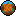

The first release. A world gets a date, the date gets a season, and the season gets a corner of the screen.

autumnA world keeps a day count, the day count gives a month, and the month gives the season everything else reads.
The date is saved with the world and sent to the client, so it survives a restart and every player agrees on it.